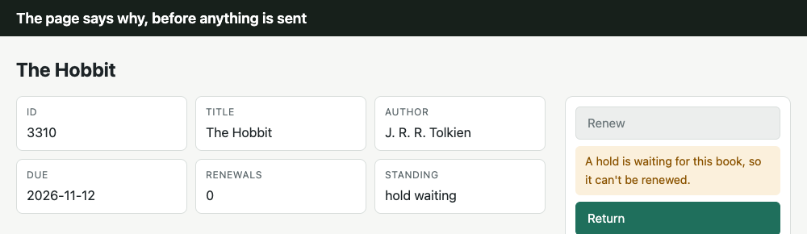
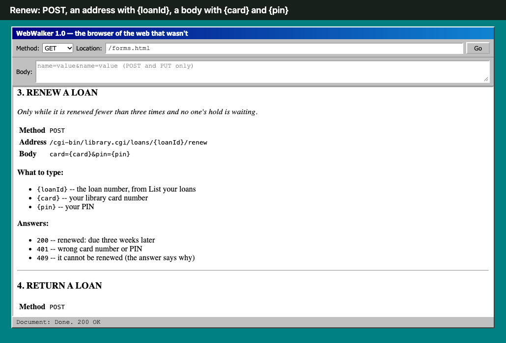
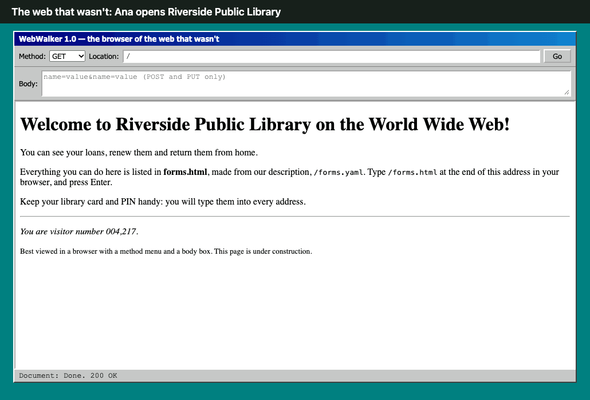
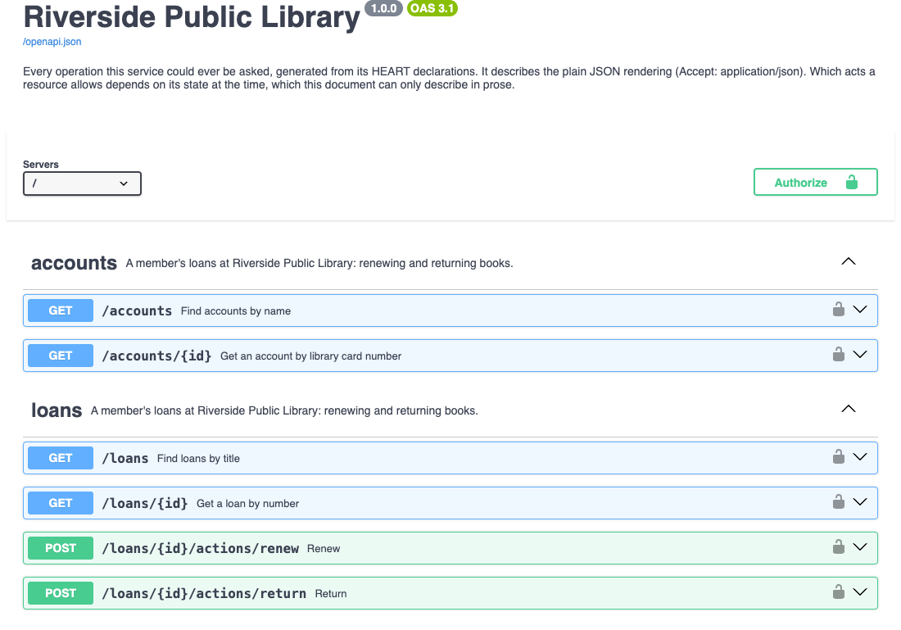
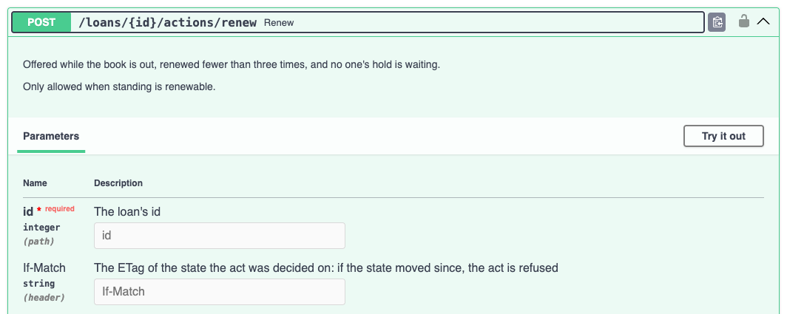

Overheard at RiversideA fictional conversation · all 25 slides
1 · Opening
Overheard at Riverside
The web that wasn't, and the web we got, told as conversations overheard at one small library.
A fictional conversation
The four people below are invented, and so is the 1997 web they live through: one where pages never got forms. The library, its rules, the code, every screen and every number come from running demos: a Perl site built for the web that wasn't, and HEART services today.
Ana TorresA member of Riverside Public Library, with three books out: The Hobbit, Matilda and Charlotte's Web. We meet her in 1997, and again today.
MarcusOn the library's help line in 1997, talking Ana through a site with no buttons. Still there today.
PriyaBuilds the library's API, today.
SamBuilds an assistant that renews library books for members, today.
1997, the web that wasn't

Today, the web we got
Move with → and ←, the links below, or the outline. Every slide has its own address.
2 · Opening
One loop, two readers
Where this is headed: the way a person uses the web is the way an agent can.
A person, in a browserARTIE, an agent
LookRead the page: what it says, and the buttons it shows.
the same step
SyncRead the state and the controls offered now, with its version tag.
→
ThinkChoose what to press.
the same step
ReasonChoose among the offered controls: a model once, then a kept script with none.
→
ActPress it. The next page comes back.
the same step
ActSend the form, with If-Match. The answer is the next state.
↺ round again, from what came back
Same server, same answer, same controls. An agent doesn't need a different web; it needs the one people already use.
Where the two differ
Seeing and reading: a person sees a grey button; ARTIE reads the same absence as data, with its reason.
Judgment: a person judges every time; ARTIE asks a model only where judgment is needed, then keeps the way it found.
Staleness: a person reloads; ARTIE sends back the version it read, and a stale act is refused, 412.
3 · Opening
HEART, in brief
HTTP services that answer the way web pages do: each answer carries its state and the controls that state allows.
HHypermediaThe controls travel in the answer: links to follow, forms to fill, offered by state.
EEnforcedThe server refuses what it didn't offer (409), what's stale (412) and what doesn't fit (422), each with its reason.
AAgenticAn agent reads the same answers a person's page is built from.
RReliableForms are pinned by integrity; a kept script replays with no model, and stops rather than guess.
TTransactionsEach act is a conditional request on the state you read: If-Match, then the next state.
HAL for links and embedded resources.
HAL-FORMS, the on-ramp: templates inside each answer.
JSON Schema 2020-12 for what a form takes.
HTTP as written: ETag and If-Match, Prefer and Preference-Applied, problem details for refusals.
Profiles: a link with rel="profile", and ALPS for what each relation means.
Today: Spring HATEOAS serves HAL-FORMS, and ARTIE reads it as it is. In Spring's own affordances example, ARTIE lists, creates, updates and deletes employees.
The other way round: HEART serves HAL-FORMS too, so a Spring HATEOAS client reads a HEART service.
Planned, not built: one dependency that serves a Spring app's affordances as HAL Schema Forms, with no rewrite.
Forms as JSON Schema, each with where to send it and how.
Offered by state, and an absent one says why.
Choices from state: a field can take its choices from the resource, so a client picks from them instead of guessing.
Cache-friendly: at L2, one form set per state, linked with an integrity hash, shared by every resource in that state and cached for good.
4 · Scene one · 1997Fiction
Every act from a manual
Fall 1997, a Tuesday evening, in the web that wasn't. Ana Torres has three library books due. She calls Riverside Public Library, and Marcus answers.
Fall 1997, in the web that wasn't. Ana Torres has three books due, and calls Marcus on the library's help line: she thinks she's renewing them wrong.
Marcus sends her to forms.html. It lists every act the site has, the same for every loan, each with a method, an address with {loanId} in it, and what to type.
Her loan numbers are on another page. To renew, Ana has to find each number there and type it into the address herself.
What it shows: the information is on one page and the controls on another, and Ana is the one who joins them.
Ana
I'm trying to renew my books online, and I think I'm doing it wrong.
Marcus
Do you have forms.html open?
Ana
It says, “To do something, type its address into your browser.” Number three, in capitals: RENEW A LOAN. Method, POST. Address, /cgi-bin/library.cgi/loans/{loanId}/renew.
Marcus
That's the one. Put your loan number where it says loanId.
Ana
And where do I get my loan number?
Marcus
From your loans page. Type its address, with your card number and your PIN on the end.

forms.html: every operation, for every loan alike, and what to type.
What's real behind the scene
A site as 1997 would run it: Apache, and CGI scripts in Perl with CGI.pm.
Imagine YAML existed in 1997, and the equivalent of OpenAPI was made then, named forms.yaml. forms.cgi reads it with YAML::XS and writes forms.html, the page people browse it by.
WebWalker, the browser of the web that wasn't, has a method menu and a body box, because pages have no forms.
The CGI behind forms.html
forms.cgi reads forms.yaml, the OpenAPI of this 1997, and walks every path and method in it. For each it prints the rule, the method, the address with its placeholders, and what to type. Nothing in it knows a loan.
Ana opens her loans page the way forms.html says: her card number and PIN typed on the end of the address, where anyone behind her can read them.
The page is three loan numbers with titles and due dates. None is a link, so she copies 3310, 3311 and 3312 onto a sticky note.
Marcus talks her through the rest: POST from WebWalker's method menu, the renew address with the number in it, and her card and PIN in the body box.
What it shows: with no controls in the page, the person carries everything by hand, her PIN included.
Ana
My PIN goes in the address? Where anyone behind me can read it?
Marcus
…That's what forms.html says.
Ana
Fine. Three numbers: 3310, 3311, 3312. They aren't even links. I'm copying them onto a sticky note.
Marcus
That's normal. Now pick POST from the method menu and type the address. In the body box, type card equals your card, ampersand, pin equals your PIN. Exactly as shown.
Her loans: numbers to copy, no links, nothing to press. Her card and PIN ride in the address.
Why the PIN is in the address
With no forms, every value travels in an address or a body the person types. Secrets included.
forms.yaml lists the card and PIN as query parameters of the loans list, so forms.html tells her to type them there.
The CGI behind her loans page, and the PIN in the address
library.cgi reads the card and PIN from the query string, because forms.yaml lists them as query parameters. Then her loans page is a table of numbers: no links, nothing to press.
elsif (($q->param('card') // '') ne $MEMBER{card} || ($q->param('pin') // '') ne $MEMBER{pin}) {
answer('401 Unauthorized', 'Not signed in', p('Wrong card number or PIN.'));
}
Ana sends the renewal for The Hobbit. The answer is 409: a hold is waiting, so it can't be renewed. She only finds out after typing it all.
Marcus tries 3311 for her, and Matilda renews. Charlotte's Web would fail too, renewed three times already, yet forms.html offers renew for all three.
Ana asks why the page can't show a Renew button on the books she can renew, and say why on the others. Marcus writes “buttons?” on a sticky note. In that world, nobody reads it.
What it shows: a rule kept in prose, away from the page, is learned by refusal.
Ana
Sent. It says 409. “A hold is waiting for this book, so it can't be renewed.”
Marcus
Someone's waiting for The Hobbit.
Ana
Couldn't it have told me before I typed all of it?
Marcus
The page doesn't know what you can do. forms.yaml does, the same for every book. Renew is listed for all of them, and the rule is in its description. Try 3311. That's Matilda.
Ana
“Loan 3311 is renewed. It is due 1997-12-03.” And Charlotte's Web?
Marcus
Renewed three times already. It'll say no.
Ana
Then why does forms.html offer it?
Marcus
It offers everything to everyone.
Ana
Why can't the page just show me a Renew button on the books I can renew, and say why on the ones I can't?
A long pause.
Marcus
…Huh.
He writes “buttons?” on a sticky note. In this world, nobody ever reads it.
Typed, sent, refused. Only now does she find out.
Watch her whole visit

The Perl site, recorded in headless Chrome: forms.yaml, forms.html, her loans, the 409, then Matilda.The CGI that said 409
The rules are real, and checked in order: returned already, a hold waiting, renewed the most allowed. Only after all three does it move the due date three weeks on. Ana meets them only after she has sent the request.
sub act {
my ($id, $what) = @_;
my $loan = find($id) or return answer('404 Not Found', 'No such loan', p("There is no loan $id."));
return answer('409 Conflict', 'Cannot do that', p('It was returned already.')) if $loan->[7];
if ($what eq 'return') {
$loan->[7] = 1;
save();
return answer('200 OK', 'Returned', p("Loan $id is returned. Thank you."));
}
return answer('409 Conflict', 'Cannot renew', p("A hold is waiting for this book, so it can't be renewed."))
if $loan->[6];
return answer('409 Conflict', 'Cannot renew', p("It has been renewed $MOST_RENEWALS times, the most allowed."))
if $loan->[5] >= $MOST_RENEWALS;
my ($y, $m, $d) = split /-/, $loan->[4];
my @due = gmtime(timegm(0, 0, 12, $d, $m - 1, $y) + 21 * 86400);
$loan->[4] = sprintf('%04d-%02d-%02d', $due[5] + 1900, $due[4] + 1, $due[3]);
$loan->[5]++;
save();
answer('200 OK', 'Renewed', p("Loan $id is renewed. It is due $loan->[4]."));
}
What actually happened, right from the beginning: the page took the controls in. The browser needed no method menu and no body box, and nobody needed a sticky note.
The web that wasn't: two windows, joined by hand
WebWalker 1.0 — the browser of the web that wasn't
Only while it is renewed fewer than three times and no one's hold is waiting.
Method POST Address /cgi-bin/library.cgi/loans/{loanId}/renew Body card={card}&pin={pin}
4. RETURN A LOAN
Method POST Address /cgi-bin/library.cgi/loans/{loanId}/return
Document: Done. 200 OK
The web that wasn't, in WebWalker: her loans on one page, every act on another, the same for every loan. The browser carries a method menu and a body box, because pages can't. Ana joins the two, by hand.
What actually happened: one page, its information and its controls together
Netscape - [Riverside Public Library -- Your loans]
File Edit View Go Bookmarks Options Directory Window Help
A hold is waiting for this book, so it can't be renewed.Return
3311Matilda1997-11-12
RenewReturn
3312Charlotte's Web1997-11-12
It has been renewed 3 times, the most allowed.Return
Document: Done
What actually happened, right from the beginning: Netscape Navigator, and a page with forms, written by the same CGI. Each loan carries its own acts, and the reason for the one it can't do. Nothing to copy, nothing to type, and no PIN in the address.
Two stills. Read as HEART, this slide links a script that animates them (deck:code). Plain JSON carries no links, so no code arrives.
The CGI, as it actually happened
The same Perl, the same loans, rules and reasons as the web that wasn't. Two things differ: her loans page writes a form for each act a loan allows now, and the reason in place of the one it doesn't; and she signs in with a form, so her card and PIN travel in a POST body, never in the address.
The web that wasn't: numbers to copy
sub list {
my @rows = (Tr(th(['Loan number', 'Book number', 'Title', 'Due'])));
push @rows, Tr(td([$_->[0], $_->[1], escapeHTML($_->[2]), $_->[7] ? 'returned' : $_->[4]])) for @loans;
answer('200 OK', 'Your loans', table({ -border => 1, -cellpadding => 4 }, @rows));
}
sub list {
my ($said) = @_;
my @rows = (Tr(th(['Loan', 'Title', 'Due', ''])));
for my $loan (grep { !$_->[7] } @loans) {
my $id = $loan->[0];
my $renew = $loan->[6] ? i("A hold is waiting for this book, so it can't be renewed.")
: $loan->[5] >= $MOST_RENEWALS ? i("It has been renewed $MOST_RENEWALS times, the most allowed.")
: form_for($id, 'renew', 'Renew');
push @rows, Tr(td([$id, escapeHTML($loan->[2]), $loan->[4], $renew . ' ' . form_for($id, 'return', 'Return')]));
}
answer('200 OK', 'Your loans', ($said ? p(b($said)) : ()), table({ -border => 1, -cellpadding => 4 }, @rows));
}
The window around the page is drawn; the page in it is this script's. married/run.sh runs it as Apache would and keeps each answer in married/captures/: the sign-in form, her loans page, Matilda renewed from its own button, and a renewal of The Hobbit sent anyway, refused, 409.
The animation is code on demand
This slide's resource links a script under deck:code, with its SHA-256 as integrity. heart-ts loads it, and the browser runs it only if the bytes match.
The script knows no slide. This slide's HTML says what moves, and where; the Great Divorce links the same script for its own stills.
Switch to Plain JSON at the top: no links, so no code, and the stills one after another.
“The final addition to our constraint set for REST comes from the code-on-demand style of Section 3.5.3 (Figure 5-8). REST allows client functionality to be extended by downloading and executing code in the form of applets or scripts. This simplifies clients by reducing the number of features required to be pre-implemented. Allowing features to be downloaded after deployment improves system extensibility. However, it also reduces visibility, and thus is only an optional constraint within REST.”
“The notion of an optional constraint may seem like an oxymoron. However, it does have a purpose in the architectural design of a system that encompasses multiple organizational boundaries. It means that the architecture only gains the benefit (and suffers the disadvantages) of the optional constraints when they are known to be in effect for some realm of the overall system. For example, if all of the client software within an organization is known to support Java applets [45], then services within that organization can be constructed such that they gain the benefit of enhanced functionality via downloadable Java classes. At the same time, however, the organization's firewall may prevent the transfer of Java applets from external sources, and thus to the rest of the Web it will appear as if those clients do not support code-on-demand. An optional constraint allows us to design an architecture that supports the desired behavior in the general case, but with the understanding that it may be disabled within some contexts.”
Roy T. Fielding, dissertation, 2000, §5.1.7, Code-On-Demand
Next: today, in the web we got. The page still carries its controls.
8 · Scene two · todayFiction
The page carries its controls
Today. Same library, same card, and somehow the same three books. Ana calls Marcus out of habit.
Today, in the web we got. Same library, same card, the same three books. Ana calls Marcus again, out of habit.
On her phone, each book's page carries its own buttons. She presses Renew on Matilda, and it's due December third.
The Hobbit's Renew is grey, and the reason is under it: a hold is waiting. Charlotte's Web says it was renewed the most allowed.
What it shows: the same rules as 1997, now on the page before Ana tries. As Marcus puts it, every page is its own forms.html.
Ana
Marcus, it's Ana Torres. Remember the sticky notes?
Marcus
I think I still have one.
Ana
I opened my account on my phone. Three books, with their titles. On Matilda: Renew and Return. I pressed Renew, and it's due December third.
Marcus
Nobody types POST anymore.
Ana
The Hobbit's Renew is grey, and under it: a hold is waiting. Charlotte's Web says it's been renewed the most allowed. Return is still there.
Marcus
Same rules as 1997. The page knows them before you try. Every page is its own forms.html now: for just that book, just now.
HEART's HTML: Matilda renews; The Hobbit says why not.
Stills, and where the page comes from
Her account links each book by title.Matilda offers Renew and Return.
The library declares its acts once; heart-core serves this HTML from that declaration, beside the JSON faces agents read.
9 · Between the scenes
The same moment, two webs
1997, the web that wasn't: typed, sent, refused.Today: Renew greyed, with the reason, before anything is sent.
Same library, same rules: renew is refused while a hold is waiting, or after three renewals.
The web that wasn't: a document of every address, pages of numbers, a POST typed by hand.
The web we got: each page carries the controls its state allows.
10 · Scene three · todayFiction
The machine web's manual: OpenAPI

The library's API as HEART serves it in OpenAPI, shown in Swagger UI: every operation, for every loan alike. It says so itself: which acts a resource allows depends on its state, which the document can only describe in prose.
Today. Priya, who builds the library's API, has it on her screen. Sam builds the assistant that renews books for members.
The same day, in the library's IT office. Priya builds its API; Sam builds an assistant that renews books for members.
Priya shows the loans API in Swagger UI: every operation, for every loan alike. Sam's assistant sent renew for The Hobbit and got a 409, the rule in the operation's prose.
Sam recognizes forms.html: every address, the same for every loan, found out by trying. Ana's page gives her a grey button; his assistant gets a 409.
What it shows: JSON for the information, OpenAPI for the controls, and the client joining them, as Ana did in 1997.
Priya
There's the loans API. Every operation, every field, every status code.
Sam
And renew, for every loan. My agent sent one for The Hobbit and got a 409.
Priya
The rule's in the description: fewer than three renewals, no hold waiting.
Sam
Remember forms.html? Every address, the same for every loan, and you found out by trying.
Priya
…This one has a Try it out button.
Sam
Ana's page gives her a grey button with the reason. My agent gets a 409.
Renew, opened, beside 1997's forms.html

Today: renew, its rule in prose, and Try it out.1997: RENEW A LOAN in forms.html, and what to type.
The two documents behind them
1997: the Perl site's forms.yaml
/loans/{loanId}/renew:
post:
summary: Renew a loan
description: Only while it is renewed
fewer than three times and no one's
hold is waiting.
responses:
'200': renewed
'409': it cannot be renewed
Today: heart-core's OpenAPI twin
/loans/{id}/actions/renew:
post:
description: Offered while the book is out,
renewed fewer than three times, and
no one's hold is waiting.
requestBody: { $ref: Renew }
responses:
'200': The loan after the act
'409': NotOffered
Both list renew for every loan, always. forms.yaml is the OpenAPI of the web that wasn't, and forms.html its Swagger UI. Whether this loan can be renewed now, each says only after the call.
11 · Between the scenes
The Great Divorce
What a loan is, and what you can do with it: together on Ana's page, split apart on the machine web, and together again in HAL Schema Forms.
A page: information and controls together
library.test/loans/3310
The Hobbit
ID3310
TitleThe Hobbit
AuthorJ. R. R. Tolkien
Due2026-11-12
Renewals0
Standinghold waiting
Renew
A hold is waiting for this book, so it can't be renewed.
Report a problem
Problem
It's damaged
Comment
Up to 200 characters
Return
Ana's page for The Hobbit. What the loan is, on the left. What she can do with it now, on the right: Renew greyed, with the reason; Report a problem, a choice of the library's kinds and a comment; and Return.
The Divorce of Information from Controls
Information · GET /loans/3310 · application/json
{"id": 3310,"title": "The Hobbit","author": "J. R. R. Tolkien","due": "2026-11-12","renewals": 0,"standing": "hold waiting"}
The client joins them, and learns the rules from a 409 and a 422
Controls · openapi.json · every loan alike
paths:/loans/{id}/actions/renew:post:description: Offered while the book is out, renewed fewer than three times, and no one's hold is waiting. Only allowed when standing is renewable./loans/{id}/actions/report-problem:post:description: … problem: one of the values that /problem-kinds lists.requestBody: Report-problem/loans/{id}/actions/return:post: …components:schemas:Report-problem:required: [problem]problem: { type: string, x-heart-options: { link: /problem-kinds, … } }comment: { type: string, maxLength: 200 }
The data, alone, says nothing of what it allows. The operations, alone, are the same for every loan: this loan's reason is now a rule in prose, and the problem's choices a sentence about a list the document never describes. The client joins the two each time.
The Return of Information and Controls
Information and controls · GET /loans/3310 · HAL Schema Forms
The same page as HAL Schema Forms: the same data; the acts this loan allows now, each form with its fields, the problem's choices linked; and a link to what's absent and why. Nothing is lost, and there is nothing to join.
Three stills. Read as HEART, this slide links a script that animates them (deck:code). Plain JSON carries no links, so no code arrives.
The same script animates the Marriage: code on demand, linked by each slide that uses it. Every value here is from the running library service: its HTML page, its plain JSON, its OpenAPI twin and its HAL Schema Forms answer, trimmed where marked …. Next: Fielding's name for keeping the two together.
12 · Between the scenes
Information and Controls
Fielding's name for the two kept together is hypertext.
“When I say hypertext, I mean the simultaneous presentation of information and controls such that the information becomes the affordance through which the user (or automaton) obtains choices and selects actions.”Roy T. Fielding, 2008
Hypermedia as the engine of application state, HATEOAS, is the most followed constraint of all time on the human web, and the least followed on the machine web.
The human web: every page you have ever loaded follows it. It carries what you can do, from where you are, now.
The machine web, JSON over HTTP: the data in one answer, the operations in a document beside it, the same for every state.
Hypertext, briefly: eighty years of one idea
1945Vannevar Bush, “As We May Think”. The Memex: a desk of documents joined by trails a reader follows and adds to.
1965Ted Nelson coins “hypertext”: text that branches, where the reader chooses the path.
1968Douglas Engelbart's demonstration: links, windows and a mouse, live, with information you could click and change.
1989–91Tim Berners-Lee's Web: a proposal at CERN, then the first browser and server. Any page can link to any other, and one generic program, the browser, can follow them all.
1993–95Forms: Mosaic adds fill-out forms, and HTML 2.0 (RFC 1866) makes them standard. Pages stop only showing and start offering things to do. In this story's 1997, they never came.
2000Fielding's dissertation names the architecture: REST, with hypermedia as the engine of application state. The client moves from state to state by choosing among the controls each answer carries, as every page on the Web already did.
2008Fielding, “REST APIs must be hypertext-driven”: a rebuke to the “REST APIs” that had dropped exactly that.
Bush, The Atlantic, 1945; Nelson, ACM, 1965; Engelbart, 1968; Berners-Lee, “Information Management: A Proposal”, CERN, 1989; HTML 2.0, RFC 1866, 1995; Fielding, dissertation, 2000, and the 2008 post.
His complaint, 2008, in his words
“I am getting frustrated by the number of people calling any HTTP-based interface a REST API. Today’s example is the SocialSite REST API. That is RPC. It screams RPC. There is so much coupling on display that it should be given an X rating.
What needs to be done to make the REST architectural style clear on the notion that hypertext is a constraint? In other words, if the engine of application state (and hence the API) is not being driven by hypertext, then it cannot be RESTful and cannot be a REST API. Period. Is there some broken manual somewhere that needs to be fixed?”
The post’s opening
“A REST API should be entered with no prior knowledge beyond the initial URI (bookmark) and set of standardized media types that are appropriate for the intended audience (i.e., expected to be understood by any client that might use the API).”
What's absent says why.“The grey button with its reason, as data.”On the wire
+ "hr:unavailable": { "href": "/unavailable/61bc1cd6003e61f0" }
GET /unavailable/61bc1cd6003e61f0
{ "unavailable": [ { "rel": "/profiles/library#renew", "title": "Renew",
"reason": "A hold is waiting for this book, so it can't be renewed." } ] }
A version tag guards the act.“Send back the tag you read. Stale is refused, 412, not a surprise.”On the wire
ETag: "seq-1.hsf.L0.d96396fb7e046607"
POST /loans/3311/actions/renew If-Match: "seq-0.stale"
412 Precondition Failed The act is stale: the state has changed
One form set per state, shared.“Every loan with a hold waiting links the same set: fetched once, checked by its hash, cached.”On the wire (L2)
Priya asks whether she has to rewrite the API. Sam says no: she declares the acts once, what each state offers, and why one is missing.
From that one declaration, HEART serves HTML for Ana, HAL-FORMS and HAL Schema Forms for Sam's assistant, and an OpenAPI twin.
Apps that ask for application/json get what they always got. An act sent anyway, without its form, is refused, 409, with the reason.
What it shows: a form is an offer, and the server stays in charge, as the library's 1997 CGI did, but now it says so first.
Priya
Do I rewrite the API?
Sam
The data stays as it is. You declare the acts once: what each state offers, and why one is missing. HEART serves that as HTML for Ana, as HAL-FORMS and HAL Schema Forms for agents, and as an OpenAPI twin for anyone who still wants one.
Priya
And every app already calling us with application/json?
Sam
It gets what it gets today: the loan's data, and no controls. Only a client that asks for HEART gets them.
Priya
And a client that ignores the forms and posts renew anyway?
Sam
409, with the reason. A form is an offer. The server stays in charge.
Priya
So the API answers the way the page does.
Sam
The way the web always did, for people.
The same loan, asked two ways, live
An app that asks for application/json, as before
GET /loans/3310
Accept: application/json
200 OK Content-Type: application/json
{ "id": 3310, "title": "The Hobbit",
"author": "J. R. R. Tolkien",
"due": "2026-11-12", "renewals": 0,
"standing": "hold waiting" }
A client that asks for HEART: HAL Schema Forms, at L0
From the running library service, by live/upgrade.mjs. Adopting HEART changes nothing for the first: the same data, no controls.
one declarationActs, what each state offers, and why one is absent.
HTMLFor Ana in a browser: buttons, greyed with a reason.
HAL-FORMSThe on-ramp, read by Spring HATEOAS clients and ARTIE.
HAL Schema FormsThe reference dialect: forms as JSON Schema, shared per state.
OpenAPI twinFor tools that only read OpenAPI.
What the library declares
// its vocabulary
Profile(name = "library", relations = listOf(Relation("renew", AlpsType.UNSAFE, "Renew", …), …))
// its acts
acts = listOf(Act("renew", "renew", NO_INPUT), Act("return", "return", NO_INPUT))
// what each state offers
keyOf = { it.standing }
offered = { standing -> when (standing) {
RENEWABLE -> listOf("renew", "return")
RETURNED -> emptyList()
else -> listOf("return")
} }
// why, when it doesn't
whyAbsent = { standing, _ -> WHY.getValue(standing) } // ON_HOLD: "A hold is waiting for this book, …"
// the version every act is checked against
versionOf = { it.version }
heart-core writes the wire from it. For an API you don't own, the HEART gateway does the same from its OpenAPI description, with your own controls in front.
The same rule, in 1997's CGI and in today's declaration
1997: checked when the request arrives
return answer('409 Conflict', 'Cannot renew', p("A hold is waiting for this book, so it can't be renewed."))
if $loan->[6];
return answer('409 Conflict', 'Cannot renew', p("It has been renewed $MOST_RENEWALS times, the most allowed."))
if $loan->[5] >= $MOST_RENEWALS;
private val WHY = mapOf(
Loan.RENEWABLE to "It can be renewed and returned.",
Loan.ON_HOLD to "A hold is waiting for this book, so it can't be renewed.",
Loan.AT_LIMIT to "It has been renewed ${Loan.MOST_RENEWALS} times, the most allowed.",
Loan.RETURNED to "It was returned.",
)
The same three rules. The CGI finds out after the request; the declaration says, for each standing, what is offered and why the rest isn't, so every answer carries it before the request. heart-core still refuses an act it didn't offer, 409, as the CGI did.
15 · Scene four · an hour laterFiction
OpenAPI clients can opt in
Priya asks whether Sam's assistant, which reads OpenAPI, has to switch to HEART to stop guessing.
Sam says no: each plain JSON answer can carry one more header, a link to the forms that loan allows now. A client that ignores it never notices.
Opted in, the assistant skips renew for The Hobbit and sends nothing that would be refused.
What it shows: HEART can be taken up one client at a time.
Priya
Your agent reads our OpenAPI. Does it have to switch to HEART to stop guessing?
Sam
No. Each plain answer can carry one more header: a link to what this loan allows now. The description already says how to read it.
Priya
And a client that doesn't read it?
Sam
Never notices. Same body, one header it ignores.
GET /loans/3310 Accept: application/json
200 OK Content-Type: application/json
Link: </affordance-sets/76c46cea7232ed43>; rel="https://w3id.org/heart-rise/rels/forms";
type="application/hal+json"; integrity="sha256-dsRs6nIy7UNUPi6OIILLINPmCkhlW8yhxdwuxe7pDCI="
{ "id": 3310, "title": "The Hobbit", …, "standing": "hold waiting" }
Reading the description alone
The Hobbit: renew and return both look possible.
It renews, and learns only after the call: 409, “A hold is waiting for this book, so it can't be renewed.”
Opted in to the link
The Hobbit: return only. Nothing is sent that would be refused.
Matilda: renew and return.
Each set is fetched once by its address, and checked against its integrity.
What opting in takes, in the client
// The link the description documents (x-heart-affordances), the set it names,
// and the operations a form in it matches, by method and path template.
async function allowedNow(header, candidates) {
const link = linked(header);
if (!link) return { offered: candidates, from: "no link" };
if (!sets.has(link.href)) {
const set = await send("GET", link.href, { Accept: link.type });
const [algorithm, digest] = link.integrity.split(/-(.*)/s);
const intact = createHash(algorithm).update(set.bytes).digest("base64") === digest;
if (!intact) throw new Error(`the set at ${link.href} does not match its integrity`);
sets.set(link.href, Object.values(set.json._forms));
}
const forms = sets.get(link.href);
return { offered: candidates.filter((op) => forms.some((f) =>
f.method === op.method && matches(op.path, f._links.target.href))), from: link.href };
}
From live/openapi-client.mjs, an OpenAPI client of the running library service; every exchange is in openapi-optin.capture.yaml. The description's x-heart-affordances names the header, the relation, and how to match.
16 · Scene four · that eveningFiction
A purpose, not a program
That evening. Priya has gone back to the 2008 post the quote on the whiteboard came from, and is reading the replies under it.
That evening, Priya reads the replies under Fielding's 2008 post. In one, he says what a client needs once each answer carries its instructions; it is quoted whole on the slide.
He names three kinds of purpose: user-driven, configuration-driven and AI-driven. Sam matches them: Ana at her page, a kept script, a model.
So they don't write the assistant a program. They write its purpose, in plain words, in member.goal.md, and let each answer's forms supply the rest.
What it shows: the agent needs a goal, not a program; once it has found the way, what it did can be kept.
Priya
Someone asked him about queues, three weeks after the post. Listen to how he ends his answer.
“If a client is receiving instructions on how to interact with a resource just before acting only on those instructions, then the client doesn’t care if the resource is a distributed queue. It simply doesn’t need to know how the resource is implemented. All it needs to know is the meaning of those instructions and some idea of what it wants to do next, whether that purpose be user-driven, configuration-driven, or some sort of AI-driven.”Roy T. Fielding, a reply under his post, 8 November 2008
Sam
“Some idea of what it wants to do next.” That's all a client needs?
Priya
When every answer carries its instructions, yes. And he names three kinds of purpose.
Sam
Ana at her page is user-driven. A script is configuration-driven. And a model reading the forms…
Priya
…is some sort of AI-driven. In 2008. So we don't write the assistant a program. We write it the purpose, in plain words, and the forms tell it the rest.
Sam
And once it has found the way, we keep what it did as a script. The AI-driven run becomes a configuration-driven one.
What they wrote that night: member.goal.md
Renew each book a member has out that can be renewed, and say why for any that can't.
- Find the account of the member named {member}
- For each book they have out: renew it if renewing is offered; otherwise say why it can't be renewed
He said it more than once, that autumn
“When representations are provided in hypertext form with typed relations (using microformats of HTML, RDF in N3 or XML, or even SVG), then automated agents can traverse these applications almost as well as any human. There are plenty of examples in the linked data communities. More important to me is that the same design reflects good human-Web design, and thus we can design the protocols to support both machine and human-driven applications by following the same architectural style.”
A reply, 23 October 2008
“Think of it in terms of the Web. How many Web browsers are aware of the distinction between an online-banking resource and a Wiki resource? None of them. They don’t need to be aware of the resource types. What they need to be aware of is the potential state transitions — the links and forms — and what semantics/actions are implied by traversing those links. A browser represents them as distinct UI controls so that a user can see potential transitions and anticipate the effect of chosen actions. A spider can follow them to the extent that the relationships are known to be safe. Typed relations, specific media types, and action-specific elements provide the guidance needed for automated agents.”
A reply, 20 October 2008
Roy T. Fielding, replies under “REST APIs must be hypertext-driven”, October and November 2008, quoted as written. The quotes are real; the conversation is not.
How a goal in plain words runs
The goal: the purpose in a sentence, then an outline of steps. {member} is an input, given on each run.
The first run: ARTIE reads each answer's forms and asks the model which one serves the step it is on. The model chooses only among what the answer offers.
Kept:artie generate writes what the run chose as a script, the goal's words beside each step. Runs after it call no model.
17 · Scene five · the next weekFiction
Find the way once, then keep it
Ana comes in to return a book. Sam shows her the assistant; Priya is at the next desk.
The next week, Ana comes in to return a book, and Sam shows her the assistant.
Given the goal and her name, it renewed Matilda and said why it couldn't renew the other two: what her phone says. Finding the way took 11 calls to Claude.
ARTIE kept what it did as a short script that takes a member's name. Runs since call no model. When Priya moved renew to a new address, the script followed the form.
What it shows: found once with a model, the way is kept, and runs without one.
Sam
We told it once, in plain words, what to do for a member: renew each book that can be renewed, and say why for any that can't. Then we gave it your name.
Ana
And?
Sam
It renewed Matilda. It said The Hobbit has no renew form, because a hold is waiting, and that Charlotte's Web was renewed the most allowed.
Ana
That's what my phone says.
Sam
Same answers, a different client. The first time, the model found the way: eleven calls to Claude. We kept what it did as a short script that takes a member's name. Every run since: no model.
Ana
When the hold on The Hobbit clears, will it renew it?
Sam
If the library offers renew then, yes. It acts on what's offered.
Priya
We moved renew to a new address on Monday. Did it break?
Sam
No. It remembers what the form does, not where it points. Change the form itself, and it stops instead of guessing.
Ana
And Charlotte's Web?
Sam
Done renewing. The library offers return.
Ana
Then I'll bring it back in person. Some things I still like to do by hand.
11model calls, once, to find the way
0model calls each run after
What they wrote: member.goal.md
Renew each book a member has out that can be
renewed, and say why for any that can't.
- Find the account of the member named {member}
- For each book they have out: renew it if
renewing is offered; otherwise say why it
can't be renewed
The goal's words stay in the script, beside the step they asked for: each step's intent, and the model's own words for each act it chose, inferred. No member's name or book's title the run met is written in it.
Kept by artie generate from the run: the member found by the name it is given, then every book their account links, renewed when it offers renew.
Pinned by what the form does, its act, not its address: a moved form costs no model call; a changed one stops the run.
The first run: Claude Sonnet 5.5, ARTIE at L2, for Ana Torres; 11 calls; 28,359 input tokens (8,713 sent, 17,860 read from cache, 1,786 written to it); 2,108 output.
18 · Scene five · the next weekFiction
The kept script, five members
Priya asks whether it only works for Ana. Sam runs the kept script for five members, one after another: Ana Torres, David Miller, Grace Okafor, Liam Chen and Sofia Rossi.
No model is called. Each run renews what each book offers, and notes why the rest can't be renewed.
The script names no member and no book: the name is an input, and the books come from each member's account.
What it shows: the way Ana's run found works for anyone.
Priya
Does it only work for Ana?
Sam
It takes a name. Here are five, one after another. The model isn't called once.
Member
Renewed
Left, and why
Model calls
Time
Ana Torres
Matilda
The Hobbit (hold waiting), Charlotte's Web (renewed the most allowed)
0
965 ms
David Miller
The Secret Garden, Holes
—
0
855 ms
Grace Okafor
Hatchet
Wonder (hold waiting)
0
847 ms
Liam Chen
—
Coraline (renewed the most allowed)
0
816 ms
Sofia Rossi
The Giver, Number the Stars
Frindle (hold waiting)
0
828 ms
Each renewed book is now due 2026-12-03. Each time is the whole run, most of it the client starting up.
How it was run
artie/five-members.mjs runs member.heart.yaml once for each name against the running library, and reads each member's books before and after, as plain JSON.
Each run's trace is in artie/runs/; the table is artie/five-members.yaml.
19 · Scene six · a month laterFiction
A release, found once, kept as loops
A month later. The library has added company groups, and Harbor Point Logistics has signed up all fifteen of its staff. Every loan can now report a problem, too.
A month later, the library adds company groups, and Harbor Point Logistics signs up its fifteen staff. Every loan can now report a problem, too.
Priya asks whether the assistant can renew for the whole company. With a model, once: 80 calls, three pages of members, 23 books, 14 renewed.
The script it kept names no one: a loop over the members, page after page, and inside it a loop over each member's books. Ana's script still runs: renew didn't change.
What it shows: a release adds what's new; a script kept against what didn't change keeps running.
Priya
Can the assistant renew for the whole company?
Sam
Once the model finds the way. It searched the members by company, five to a page, and went through all three pages: every member, every book.
Priya
And the script it kept?
Sam
Names no one. A loop over every member the search lists, page after page, and inside it a loop over each member's books. If Harbor Point has twenty staff next month, it goes through four pages.
Priya
Every loan has a new form now, for reporting a problem. Did that break Ana's script?
Sam
No. Her script pins renew, and renew didn't change. A new form beside it is one more offer it doesn't need.
80calls to Claude, once, to find the way
0model calls each run after
14of the staff's 23 books renewed
What they wrote: company.goal.md
Renew every book the members of a company group
have out that can be renewed, and say why for
any that can't.
- Find the members of the company group {company}
- For each member, on every page of the results:
open the member, and renew each book they have
out if renewing is offered; otherwise say why
it can't be renewed
What ARTIE kept: company.heart.yaml
inputs:
company:
steps:
- act: library:search-members
fields:
company: ${company}
then:
- for-each: member # every member, every page
then:
- for-each: loan # every book each has out
then:
- when-offered:
- act: library:renew
The run, and the library's release
The first run: Claude Sonnet 5.5, ARTIE at L2, for Harbor Point; 80 calls; 372,635 input tokens (229,755 sent, 141,094 read from cache, 1,786 written to it); 13,220 output; 111 steps.
Kept by artie generate, which writes a list as one loop when the run opened every member of every page, following each page's next link; a member's own list is a loop inside it. The same in Kotlin: each("member") { each("loan") { whenOffered … } }.
Run with no model on a fresh library: 110 steps. The fifteen have 23 books out: 14 renewable, each renewed once; 5 with a hold waiting and 4 at the limit, left. For the credit union: one renewed, one with a hold.
The release:search-members finds the members of a company group, five to a page, each page linking the next. Every loan that is out offers report-problem: a kind of problem, from the list the library keeps at /problem-kinds, and a comment. The accounts search and the renew form are as they were, so member.heart.yaml, pinned before the release, ran after it unchanged.
20 · Scene six · a month laterFiction
Is hypermedia bloated? Measured
Priya worries about the cost: fifteen people, every book, forms in every answer.
Sam measures the kept company script. At L0 every loan carries its forms: about 1.9 KB a loan, 118 KB in all.
At L1 each loan links one shared set per state, fetched once: 56% fewer bytes, each loan's answer 75% smaller, for four more requests.
What it shows: at L2 the schemas are shared too; everything shared is addressed by its content and kept.
Priya
Fifteen people, every book, and the forms in every answer. Isn't that a lot of bytes? And a lot of round trips?
Sam
At L0, yes: every loan carries its forms, almost two kilobytes each.
Sam
At L1, a loan carries a link to its forms instead. Every loan in the same state links the same set, at an address that never changes, so the client fetches it once and keeps it.
Priya
How many sets, for the whole company?
Sam
Four. At L2 the schemas move out of the sets too, shared the same way: two more requests, here.
The same run, at
Requests
Bytes received
One loan's answer
Time on the wire
L0, forms in every answer
110
118,348
1,871 bytes
246 ms
L1, forms linked, one set per state
114: 110 + 4 sets, once each
52,404 (−56%)
462 bytes (−75%)
152 ms
L2, schemas linked too
116: + 2 schemas
51,972
462 bytes
154 ms
The kept company script for Harbor Point, run with no model at each rung, measured from its own exchanges. The times are one machine's loopback: read them as proportions.
Shared: the target is a template, filled from each loan's own id, so one set serves every loan in its state.
Kept for good: its address is its content's digest, so it never changes there; the client checks it against the integrity the loan's link carries.
Measured byartie/rungs/measure.mjs from L0, L1 and L2.trace.yaml; the numbers and these answers in full are in rungs.yaml.
21 · Closing
Surprise: this deck is HEART too
You've been using a HEART client the whole time.
contents.jsonThe bookmark: the only address this page knows. It embeds every slide, and the outline is drawn from it.
help-line.jsonOne slide. Its HTML is the information; its links are the controls: next, prev, contents, and a plain page.
heart-tsThe second HEART client, built for the browser. → and ← follow next and prev; the outline follows the contents, then an item.
deck:codeCode on demand: the Marriage and the Great Divorce each link the script that animates them, with its digest. The page knew no animation; heart-ts ran what each slide linked.
no headers, no actsA static host can't send the profile header, so each file names its profile in its own links. It takes no POST, so the deck offers no acts; the library shows those.
The page knows no slides. Add, cut or reorder them by changing the resources; this page's code doesn't change.
See for yourself: open “This slide's resource” below any slide: what heart-ts asked, and what it read.
Without the client, each slide links a plain HTML page of itself, as alternate, typed text/html.
22 · Closing
Upgrading is optional
Switch the deck to Plain JSON at the top, then back to HEART. Same slides, same client.
Plain JSON
Each slide is data only: no links, no profile.
heart-ts reads it as data only, and offers nothing.
So the page has to know the list, build every address from deck/plain/{name}.json, and count to the next one: a client of forms.yaml.
HEART
The same data, with its links and its profile.
The same client follows them.
The page knows one address: the contents.
Nothing in the client chose the upgrade. The resources did.
And a plain JSON client reading the HEART files?
It still works. HAL is JSON: the slide's data is all there, and _links is one more member it ignores.
So a service can add its controls without breaking the clients it has, and each client takes them up when it is ready.
23 · Closing
The library, live, both ways
One heart-ts client against Riverside's running library service, recorded.
Asked for plain JSON.The Hobbit comes back as data: its title, due 2026-11-12, standing “hold waiting”. No forms, no links.
It tries to renew.“library:renew is not offered now; nothing was sent.” Plain JSON offers no acts.
The same code, asking for HEART.The Hobbit offers report a problem and return, and not renew.
And Matildaoffers renew, report a problem and return.
A plain JSON parser reads the HEART answer.Title, due date and standing are all there; _links and _forms are extra members it ignores. The upgrade breaks no old client.
A browser asks for text/html.It gets Matilda's page, from the same service.
How the service decides what to send
Accept: application/json: plain JSON, the state with no controls.
Accept: application/hal+json: HAL Schema Forms.
Accept: text/html: the page, for people.
No Accept, or */*: one default, HAL-FORMS at L0. HTTP reads a missing Accept as “anything”, so both get the same answer.
A client upgrades when it asks for HEART; a service upgrades when it names its profile. Both are optional.
Run by exhibits/overheard-at-riverside/live/upgrade.mjs against heart-sims; every exchange is in upgrade.capture.yaml beside it.
24 · Closing
One web
Look
Sync
→
Think
Reason
→
Act
Act
In the web that wasn't, the page listed everything and knew nothing. The web we got put the controls in the page. HEART puts them in the API's answers, so an agent gets what Ana gets.
Every page is its own forms.html: for just that book, just now.
25 · Closing
What's fiction, what's real
Fiction: Ana, Marcus, Priya and Sam, and what they say; the 1997 web without forms, and its browser, WebWalker.
Real, and running: the Perl site (Apache, CGI.pm, YAML::XS, forms.yaml, forms.html); the HEART library service, with its HTML, HAL-FORMS, HAL Schema Forms and OpenAPI faces; ARTIE's run with Claude and the script it kept.
Held by tests: a moved form costing no model call, and a changed one stopping the run, in ARTIE's script scenarios; this deck's profile in its own links, plain JSON read as data only, and a service's upgrade to HEART taken up by the same client, in the conformance suite both clients pass.
Run live: the library both ways, by exhibits/overheard-at-riverside/live/upgrade.mjs against heart-sims.
History: HTML forms arrived with HTML 2.0, in November 1995, so the real 1997 had them. 409 Conflict arrived with HTTP/1.1, in January 1997.
Drawn: the browser windows around the pages in the two animations. The pages in them are the services': the Marriage's loans page is written by married/library.cgi, the 1997 CGI with forms in the page, run by married/run.sh; the Divorce's page, JSON, OpenAPI and HAL Schema Forms are the running library's.
Before and after the release: the scenes before scene six show the library as it was then, recorded then; scene six, the animations and the live slide show it with company groups and Report a problem.